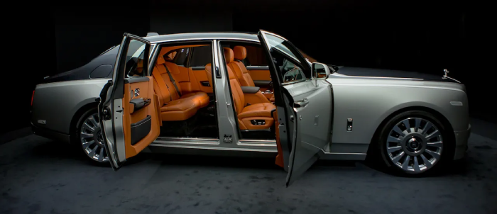
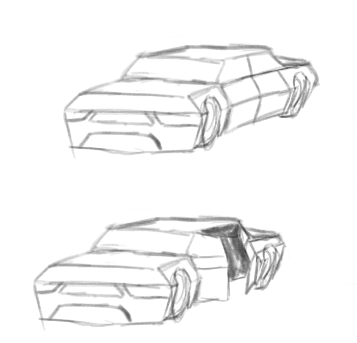
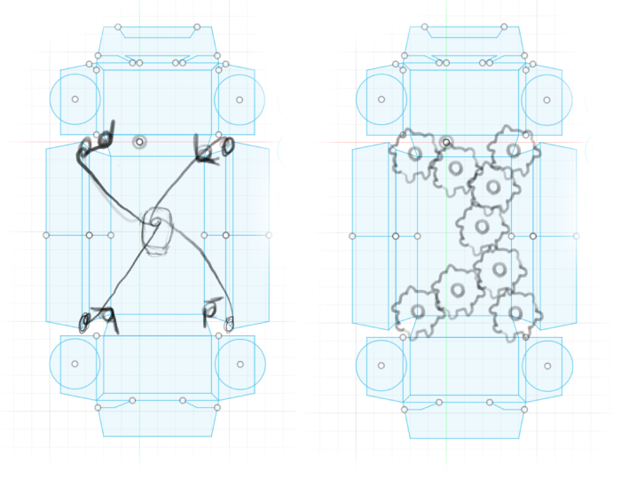
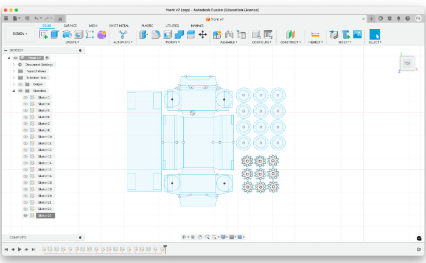

<div class="textcontainer">
<p class="margin"> </p>
<h3>Week 3: Hand Tools and Fabrication</h3>
<h4>Car with Openable Doors </h4>
<h4>While thinking about a project that would help me gain experience for my final project, I came up with a car that has openable doors. I didn't want it to be like a normal car, so I got inspiration mainly from Roll-Royce Phantom (as can be seen in the image below).</h4>

<h4>Here is my initial drawing: </h4>

<h4>First, I thought of using strings to close the doors and springs to keep them open. However, I couldn't find the exact spring I wanted, so I had to make a change after already working on the project for a while. I switched to gears in the final design. </h4>

<h4> After spending around 5-6 hours in total working on the car, I finished my fusion sketch. (I made 12 tires to make them look thicker and more realistic.) </h4>

<h4> The car will be completely finished on wednesday, as I am planning on incorporating my programming assignment to the car. I will place a motor at the back of the car to make it drivable. I am going to upload the photos to both this page and the programming page.
</div>